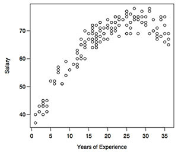

I recently took one of my favourite courses in university: regression analysis. Since I really enjoyed this course, I decided to summarize the entire course in a few paragraphs and do it in such a way that a person from non-statistics/non-mathematics background can understand. So let’s get started.
The first thing we learn in regression analysis is to develop a regression equation that models the relationship between a dependent variable, $ Y $ and multiple predictor variables $ x_1,x_2,x_3 $ etc. Once we have developed our model we would like to analyze it by performing regression diagnostics to check whether our model is valid or invalid.
So what the hell is a regression equation or a regression model? Well, to begin with, they are actually one and the same. A regression model just describes the relationship between a dependent variable $ Y $ and a predictor variable $ x $. I believe the best way to understand is to start with an example.
Suppose we want to model the relationship between $ Y $, salary in a particular industry and $ x $, the number of years of experience in that industry. To start, we plot $ Y $ vs. $ x $.
After a naive analysis of the plot suppose we come up with the following regression model: $ Y=β_0+β_1x+e$. This regression model describes a linear relationship between $ Y $ and $ x $. This would result in the following regression line:
After graphing the regression line on to the plot we can visually see that our regression model is invalid. The plot seems to display quadratic behaviour and our model clearly does not account for that. Now after careful consideration we arrive at the following regression model: $Y=β_0+β_1x+β_2x^2+e$. Again, let’s graph this regression model on to the plot and visually analyze the result.
It is clear that the latter regression model seems to describe the relationship between $ Y $, salary in a particular industry and $ x $, the number of years of experience in that industry better than our first regression model.
This is essentially what regression analysis is. We develop a regression model to describe the relationship between a dependent variable, $ Y $ and the predictor variables $x_1,x_2,x_3$, etc. Once we have done that we perform regression diagnostics to check the validity of our model. If the results provide evidence against a valid model we must try to understand the problems within our model and try to correct our model.
As I’ve said earlier, once we develop our regression model we’d like to check if it is valid or not, for that we have regression diagnostics. Regression diagnostic is not just about visually analyzing the regression model to check if it’s a good fit or not, though it’s a good place to start, it is much more than that. The following is sort of a “check-list” of things we must analyze to determine the validity of our model.
Standardized residual plots are arguably the most useful tool to determine the validity of the regression model. If there are any problems within steps 2 to 5, they would reflect in the residual plots. So to keep things simple, I will only talk about standardized residual plots. However, before I dive into that, it’s important to understand what residuals.
To understand what residuals are, we have to go back a few steps. It’s crucial that you understand that the regression model we come up with is an estimate of the actual model. We never really know what the true model is. Since we are working with an estimated model, it makes sense that there exists some “differences” between the actual and the estimated model. In statistics, we can these “differences” residuals. To get a visual, consider the graph below.
The solid linear line is our estimated regression model and the points on the graph are the actual values. Our estimated regression model is estimating the $ Y $ value to be roughly 3 when $ X=2 $ but notice the actual value is roughly 7 when $ X=2 $. So our residual, $ê_3 $, is roughly equal to 4.
Now that we understand what residuals are, let’s talk about standardized residuals. The best way to think about standardized residuals is that they are just residuals which have been scaled down; since it’s usually easier to work with smaller numbers.
Now finally we can discuss standardized residual plots. These are just plots of standardized residuals vs. the predictor variables. Consider the regression model: $ Y=β_0+β_1x_1+β_2x_2+β_3x_3+β_4x_4+e $, where $ Y $ is price, $ x_1 $ is food rating, $ x_2 $ is decor rating, $ x_3 $ is service rating and $ x_4 $ is the location of a restaurant, either to the east or west of a certain street. These predictor variables determines the price of the food at a restaurant. The following figure represents the standardized residual plots for this model.
When analyzing residual plots we check whether these plots are deterministic or not. In essence, we are checking to see if these plots display any patterns. If there are signs of pattern, we say the model is invalid. We would like the plots to be random. If they are random (non-deterministic) then we conclude that the regression model is valid. I’m not going to go into detail as to why that is, for that you’ll have to take the course.
Anyways, observing these plots we notice they are random, so we can conclude the regression model $ Y=β_0+β_1x_1+β_2x_2+β_3x_3+β_4x_4+e $ is valid.
Alright we’re done. Semester’s over. Okay, so I’ve left out some topics. Some which are very exciting like variable selection, had to give a shoutout to that. However, this pretty much sums up regression analysis. This should provide a good overview into what you’re signing up for when taking this course.